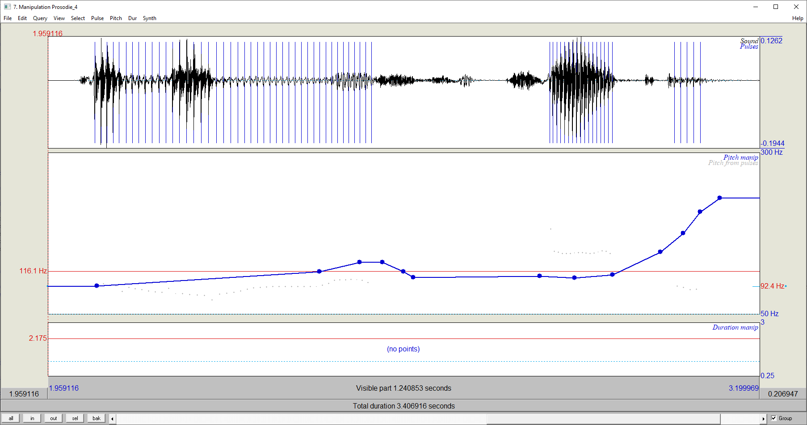

Beschreibung
Diese Übung beschäftigt sich mit dem Thema Prosodie. Im Grunde ist es ein kleines
Forschungsprojekt. Unter Prosodie verstehen wir die Sprachsignaleigenschaften, die eine Folge von
Lauten betreffen wie Intonation und Rhythmus. Wir kennen bereits die Grundfrequenzkontur f0(t), mit
der die Intonation am stärksten verknüpft ist. Sprachrhythmus ist gekennzeichnet durch die relative
Dauer bzw. Stärke von Silben. Jedes mehrsilbige Wort hat einen solchen Rhythmus aus starken und
schwachen Silben. Zum Beispiel kann der Rhythmus des Worts „ver-'steh-en“ als „kurz-lang-kurz“ oder
„. - .“ beschrieben werden. „' “ kennzeichnet die Wortakzentsilbe.
Dieselbe Folge von Wörtern kann unterschiedliche Bedeutungen habe, abhängig von der Art, wie
wir sie betonen. Zuerst suchen wir uns einen kurzen Satz mit der Struktur Subjekt-Prädikat-Objekt, wie
zum Beispiel „Der Mann liest die Zeitung“. Diesen Satz können wir nun unterschiedlich betonen, je
nach dem, nach welchem Satzteil gefragt wird, oder auch, worauf der sogenannte Fokus liegt:
1) Als Antwort auf die Frage: „Wer liest die Zeitung?“ - „Der Mann liest die Zeitung.“
2) Als Antwort auf die Frage: „Was tut der Mann mit der Zeitung?“ - „Der Mann liest die Zeitung.“
3) Als Antwort auf die Frage: „Was liest der Mann?“ - „Der Mann liest die Zeitung.“
4) Als Antwort auf die Frage: „Was passiert da?“ - „Der Mann liest die Zeitung.“
Beim letzten Beispiel 4) wird nach dem ganzen Satz gefragt, man spricht von einem „breiten Fokus“,
bei den anderen (1-3), bei denen nur nach einem Teil gefragt wird, von einem „engen Fokus“.
Fall 1
|
|
| Silbendauer [ms] | F0 [Hz] | Intensität [dB] | |
|---|---|---|---|
| Der | 104 | 109 | 65 |
| Mann | 329 | 165 | 65 |
| liest | 336 | 93 | 53 |
| die | 135 | 88 | - |
| Zei | 252 | 82 | 60 |
| tung | 322 | 94 | - |
Auf dem Satzteil "Der Mann" liegt sichtbar der Fokus. Hierbei lässt sich eine erhöhte Frequenz bei "Mann" und eine relativ hohe Intensität erkennen.
Fall 2

|
| Silbendauer [ms] | F0 [Hz] | Intensität [dB] | |
|---|---|---|---|
| Der | 107 | 87 | 66 |
| Mann | 343 | 88 | 52 |
| liest | 324 | 112 | 54 |
| die | 61 | 87 | 54 |
| Zei | 272 | 80 | 62 |
| tung | 275 | - | - |
Der enge Fokus liegt auf "liest" (die Zeitung). Bei "liest" ist die Grundfrequenz im Vergleich erhöht. Die Intensität gibt an dieser Stelle keinen Aufschluss.
Fall 3

|
| Silbendauer [ms] | F0 [Hz] | Intensität [dB] | |
|---|---|---|---|
| Der | 129 | 80 | 68 |
| Mann | 329 | 84 | 57 |
| liest | 330 | 175 | 54 |
| die | 81 | 128 | 59 |
| Zei | 269 | 127 | 65 |
| tung | 265 | 87 | 55 |
Auch hier lässt sich durch die erhöhte Frequenz der Fokus ausmachen. Leider war die Frequenz hier bereits bei "liest" erhöht. Bei der Frage "Was liest der Mann?" wird bei der Beantwortung ggf. das Verb mit betont.
Fall 4

|
| Silbendauer [ms] | F0 [Hz] | Intensität [dB] | |
|---|---|---|---|
| Der | 115 | 98 | 59 |
| Mann | 278 | 136 | 66 |
| liest | 328 | 180 | 52 |
| die | 67 | - | 53 |
| Zei | 265 | 142 | 67 |
| tung | 208 | 89 | 53 |
In diesem Fall ist eine Betonung auf mehreren Satzteilen erkennbar (breiter Fokus). Bei den Silben "Mann", "liest" und "Zei" ist die Grundfrequenz im Vergleich erhöht. Auch ist die Intensität bei diesen Silben größer, als ohne Betonung.
Nun manipulieren wir die Grundfrequenz f0(t) in Praat, indem wir mit unseren Sounds Manipulate- >To Manipulation aufrufen. Diese Manipulation beruht auf dem PSOLA-Verfahren, das wir bereits kennengelernt haben. Im ManipulationEditor sieht man oben die markierten Perioden im Sprachsignal, darunter einen Bereich, in dem Pitch (f0) angezeigt wird, und darunter einen Bereich zur Manipulation der Dauern. Im Manipulation-Editor können wir Pitch auf einen konstanten Wert setzen und so die ursprüngliche Grundfrequenz f0(t) auf einen konstanten Wert setzen, indem wir alle PitchPoints löschen und dafür einen einzelnen PitchPoint setzen. Damit erhalten wir monotone Versionen unserer Sätze. Untersuche durch Abhören, ob die ursprünglichen Bedeutungen, d.h. der Fokus, erhalten geblieben sind. Speichere die monotonen Versionen als WAV-Dateien ab (File->Publish Resynthesis überträgt das aktuelle Audio in das ObjectWindow).
Lösung
| Fall | Frequenzbreite | Spektrum mit PitchPoint ~80.0Hz |
|---|---|---|
| 1 | 80Hz - 170Hz | |
| 2 | 80Hz - 120Hz | |
| 3 | 80Hz - 180Hz | |
| 4 | 80Hz - 180Hz |
Nach Modifikation der Spektren auf ein monotones 80Hz Level, ist die Bedeutung durchweg nicht mehr klar erkennbar. Die Antworten klingen dabei sehr ähnlich und der Fokus "verschwimmt".
Jetzt nehmen wir Fall 4) und verringern die Geschwindigkeit, indem wir einen DurationPoint mit dem Wert 1,2 einsetzen. Wir erhöhen den Wert in Schritten von 0,2, bis wir bemerken, dass sich die Klangqualität deutlich verschlechtert. Woran liegt das? Speichere diesen Fall als WAV-Datei ab.
Lösung
Ab einem DurationPoint von 1.4 lässt sich beim Buchstaben "W" in der Frage ein "schnarren" erkennen.
Mit steigendem DurationPoint geht dieses in ein "knacken" über.
Bei einem DurationPoint von 2.0 ist das "Knacken" recht deutlich.

|
Wir sehen in dem Spektrum der manipulierten Tonspur, dass es wesentlich mehr "Spitzen" gibt. Dies erzeugt das "Knacken".
Für die Manipulation wurde ein TimeStep von 0.01s eingestellt. Vermutlich wird über diesen Step hinweg das Spektrum kopiert/interpoliert und verstärkt. Die Impulse im Spektrum des Buchstabens "W" bzw. Phonems [v] werden hier vervielfälltigt. Die Häufung der Impulse ist in der Tonspur als "Knacken" hörbar.
Zum Schluss nimm den Satz als Frage auf: „Der Mann liest die Zeitung?“ Vergleiche den Grundfrequenzverlauf mit der Aussage 4) und beschreibe die Unterschiede. Versuche nun, ob sich durch Übertragen des Pitch-Verlaufs die monotone Aussage in eine Frage ändern lässt. Das erfolgt ebenfalls im ManipulationEditor. Wir laden wieder die Aussage 4) und setzen in jede Silbe einen PitchPoint. Diese PitchPoints verschieben wir, bis die Aussage wie eine Frage klingt. Speichere auch diese Version als WAV-Datei ab.
Lösung
Der Pitch-Verlauf der Frage verläuft relativ konstant, mit einem leichtem, temporärem Anstieg bei der Wort "ließt" und erhöht sich stark zum Ende des Satzes.
Hingegen der Pitch-Verlauf der Antwort lediglich eine leichte Erhöhung (ab Satzmitte) verzeichnet.
Wird der Frequenzverlauf in etwa wie folgt übernommen, so kann aus der monotonen Version von Fall 4 eine Frage erstellt werden. Dabei wurden einige Pitch-Points gesetzt, um die Verlaufskurve der Frage grob nachzubilden.
